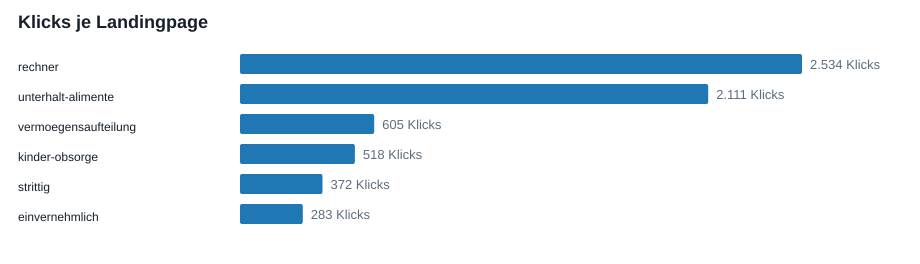
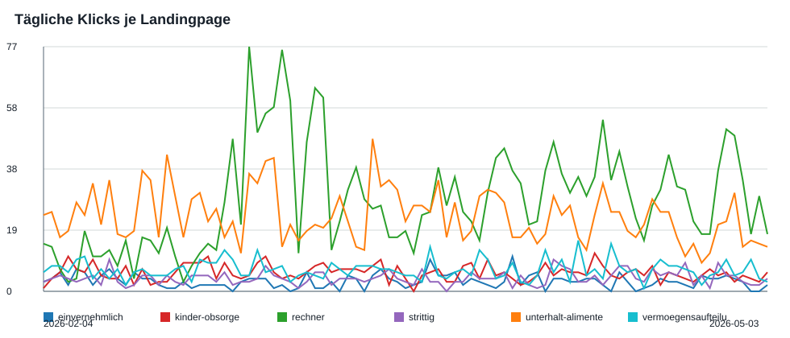

Explorative Datenanalyse: ibesich.at Search Performance
Erstellt: 2026-05-06 11:41. Zeitraum: 2026-02-04 bis 2026-05-03.
Klicks6.423
Impressionen536.122
Gewichtete CTR1,20%
Landingpages6
Executive Summary
- Der Alimente-Rechner ist der klare Performance-Treiber: 2.534 Klicks bei 73.852 Impressionen und 3,43% CTR.
- Die normale Unterhalt/Alimente-Seite hat die meisten Impressionen, aber nur 0,77% CTR.
- Mobile dominiert: 75,54% der Geräte-Klicks kommen mobil.
- Österreich ist der relevante Markt: 97,71% der Länder-Klicks.
Landingpages
| Seite | Klicks | Impr. | CTR | Pos. | Daily Klicks | Queries | Trend letzte 14T vs erste 14T |
|---|---|---|---|---|---|---|---|
| rechner | 2.534 | 73.852 | 3,43% | 6,47 | 2.534 | 770 | 176,58% |
| unterhalt-alimente | 2.111 | 273.827 | 0,77% | 8,28 | 2.111 | 1.000 | -30,23% |
| vermoegensaufteilung | 605 | 58.859 | 1,03% | 7,59 | 605 | 1.000 | -1,10% |
| kinder-obsorge | 518 | 61.077 | 0,85% | 6,54 | 518 | 1.000 | -16,88% |
| strittig | 372 | 29.179 | 1,27% | 6,78 | 372 | 923 | 12,50% |
| einvernehmlich | 283 | 39.328 | 0,72% | 8,21 | 283 | 1.000 | -35,48% |


Priorisierte Interpretation
| Seite | Auffällige Low-CTR-Queries | Nächster sinnvoller Schritt |
|---|---|---|
| rechner | alimente | Wachstum absichern: 2026-Bezug, Rechenlogik, interne Links und Snippet aktuell halten. |
| unterhalt-alimente | alimente, alimente österreich, alimente rechner | Größter Hebel: Title/Description und Intent-Splitting zwischen Info- und Rechner-Suchintention verbessern. |
| vermoegensaufteilung | keine starke Low-CTR-Query | Solide Basis: Haus/Ehevertrag/Auszahlung-Cluster gezielt ausbauen. |
| kinder-obsorge | gemeinsame obsorge nachteile, sorgerecht österreich neu, scheidung mit kindern | Viele Entscheidungs-/Vater-/Obsorge-Fragen: Antwortblöcke und interne Links zu verwandten Scheidungsthemen stärken. |
| strittig | keine starke Low-CTR-Query | Strittige Scheidung klar gegen einvernehmliche Scheidung abgrenzen. |
| einvernehmlich | einvernehmliche scheidung, einvernehmliche scheidung österreich formular, scheidung österreich ablauf | CTR schwach und Trend negativ: SERP-Snippet, FAQ und Formular-/Kosten-Intent ausbauen. |
Top-Suchanfragen
| Query | Seite | Klicks | Impr. | CTR | Pos. |
|---|---|---|---|---|---|
| alimente rechner | rechner | 468 | 10.609 | 4,41% | 5,36 |
| alimente rechner österreich | rechner | 309 | 5.475 | 5,64% | 4,96 |
| unterhalt tricks für männer österreich | unterhalt-alimente | 222 | 3.743 | 5,93% | 3,56 |
| alimente berechnen | rechner | 136 | 3.806 | 3,57% | 5,69 |
| unterhaltsrechner österreich | rechner | 103 | 4.223 | 2,44% | 6,63 |
| alimente österreich rechner | rechner | 103 | 1.786 | 5,77% | 5,38 |
| alimente rechner österreich 2026 | rechner | 98 | 767 | 12,78% | 3,80 |
| unterhaltsrechner | rechner | 94 | 5.330 | 1,76% | 6,93 |
| alimente berechnen österreich | rechner | 61 | 1.119 | 5,45% | 5,09 |
| alimente österreich | rechner | 50 | 4.997 | 1,00% | 7,15 |
| alimente rechner online | rechner | 47 | 905 | 5,19% | 5,97 |
| alimenterechner österreich | rechner | 44 | 573 | 7,68% | 4,83 |
| alimenterechner | rechner | 33 | 683 | 4,83% | 4,72 |
| einvernehmliche scheidung | einvernehmlich | 31 | 4.358 | 0,71% | 6,14 |
| alimente rechner österreich 2025 | rechner | 28 | 343 | 8,16% | 5,40 |
| alimentenrechner österreich | rechner | 28 | 270 | 10,37% | 4,50 |
| alimenten rechner | rechner | 27 | 578 | 4,67% | 5,15 |
| unterhalt berechnen österreich | rechner | 27 | 411 | 6,57% | 5,76 |
| alimenten rechner österreich | rechner | 27 | 348 | 7,76% | 4,73 |
| alimente österreich | unterhalt-alimente | 24 | 8.898 | 0,27% | 8,90 |
SEO-Opportunities
| Query | Seite | Klicks | Impr. | CTR | Pos. |
|---|---|---|---|---|---|
| alimente | unterhalt-alimente | 14 | 9.848 | 0,14% | 7,34 |
| alimente rechner | unterhalt-alimente | 1 | 6.347 | 0,02% | 6,97 |
| alimente österreich | unterhalt-alimente | 24 | 8.898 | 0,27% | 8,90 |
| einvernehmliche scheidung | einvernehmlich | 31 | 4.358 | 0,71% | 6,14 |
| alimente österreich | rechner | 50 | 4.997 | 1,00% | 7,15 |
| alimente berechnen | unterhalt-alimente | 1 | 2.406 | 0,04% | 9,52 |
| alimente bedeutung | unterhalt-alimente | 0 | 1.271 | 0,00% | 7,99 |
| unterhalt österreich tabelle | unterhalt-alimente | 0 | 659 | 0,00% | 5,54 |
| unterhalt kinder österreich | unterhalt-alimente | 3 | 1.032 | 0,29% | 7,49 |
| unterhalt österreich | unterhalt-alimente | 11 | 1.314 | 0,84% | 7,15 |
| unterhaltszahlungen österreich | unterhalt-alimente | 1 | 625 | 0,16% | 5,71 |
| was sind alimente | unterhalt-alimente | 0 | 690 | 0,00% | 6,94 |
| alimente berechnung tabelle österreich | unterhalt-alimente | 2 | 570 | 0,35% | 4,89 |
| unterhaltsrechner | rechner | 94 | 5.330 | 1,76% | 6,93 |
| unterhaltspflicht österreich | unterhalt-alimente | 5 | 745 | 0,67% | 5,93 |
| einvernehmliche scheidung österreich formular | einvernehmlich | 4 | 690 | 0,58% | 6,13 |
| alimente für 2 kinder österreich | unterhalt-alimente | 3 | 994 | 0,30% | 8,64 |
| allimente | unterhalt-alimente | 0 | 557 | 0,00% | 6,94 |
| alimente für kinder | unterhalt-alimente | 1 | 360 | 0,28% | 3,34 |
| scheidung österreich | vermoegensaufteilung | 0 | 278 | 0,00% | 3,17 |
| scheidung mit kindern | kinder-obsorge | 0 | 386 | 0,00% | 5,73 |
| ehegattenunterhalt österreich | unterhalt-alimente | 18 | 1.315 | 1,37% | 6,25 |
| sorgerecht österreich neu | kinder-obsorge | 0 | 393 | 0,00% | 6,53 |
| unterhaltsrechner österreich ehegatten | unterhalt-alimente | 1 | 276 | 0,36% | 3,19 |
| unterhalt ehefrau österreich berechnung | unterhalt-alimente | 3 | 402 | 0,75% | 4,12 |
Geräte
| Gerät | Klicks | Klick-Anteil | Impr. | CTR |
|---|---|---|---|---|
| Mobil | 2.505 | 75,54% | 173.144 | 1,45% |
| Computer | 773 | 23,31% | 47.612 | 1,62% |
| Tablet | 38 | 1,15% | 2.745 | 1,38% |
Länder
| Land | Klicks | Klick-Anteil | Impr. | CTR |
|---|---|---|---|---|
| Österreich | 3.240 | 97,71% | 198.963 | 1,63% |
| Deutschland | 38 | 1,15% | 16.191 | 0,23% |
| Italien | 7 | 0,21% | 305 | 2,30% |
| Schweiz | 5 | 0,15% | 2.273 | 0,22% |
| Slowakei | 4 | 0,12% | 83 | 4,82% |
| Kroatien | 3 | 0,09% | 72 | 4,17% |
| Bosnien und Herzegowina | 2 | 0,06% | 62 | 3,23% |
| Spanien | 2 | 0,06% | 169 | 1,18% |
| USA | 1 | 0,03% | 1.970 | 0,05% |
| Niederlande | 1 | 0,03% | 96 | 1,04% |
| Thailand | 1 | 0,03% | 61 | 1,64% |
| Frankreich | 1 | 0,03% | 98 | 1,02% |
| Slowenien | 1 | 0,03% | 86 | 1,16% |
| Türkei | 1 | 0,03% | 63 | 1,59% |
| Rumänien | 1 | 0,03% | 43 | 2,33% |
Datenqualität
Seiten.csv und Diagramm.csv sind auf Page-Ebene konsistent. Query-, Geräte- und Länder-Summen sind Detailausschnitte und deshalb niedriger.